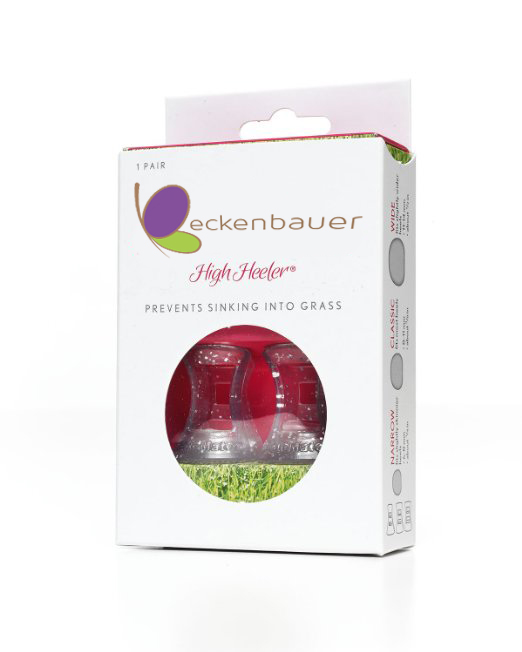

High Heeler Narrow®
Desde $9.95
Colores discponibles: Clear, Silver, Black, Gold.
Protege tus tacones y previene accidentes como undirte en el pasto, hendiduras y deslizamientos. Nuestros protectores High Heeler Narrow® son los salvavidas que te hacian falta para que te sientas verdaderamente comoda usando tacones. Diseñados para adaptarse perfectamente a tacones delgados, los High Heeler Narrow® se pueden usar con tacones con diametros entre 6 y 8 mm. Discretos, faciles para utilizar, y en variedad de colores para que se adapten mejor a tu calzado. Pensado para ti, creado por Beckenbauer.